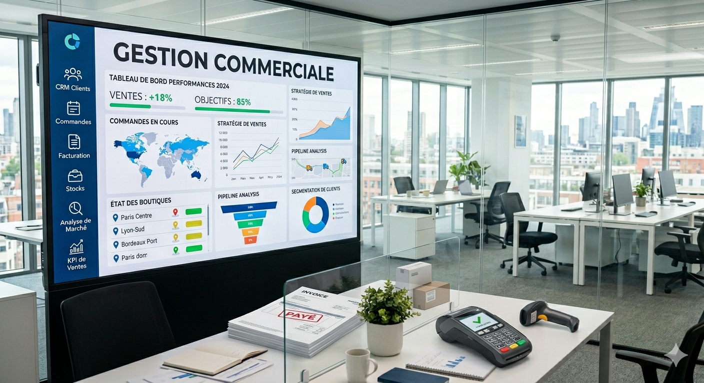

Informaticien spécialisé en Systèmes d'Information Répartis & Business Intelligence, passionné par les solutions logicielles et la data
Je suis informaticien titulaire d'un Master 1 en Systèmes d'Information Répartis, actuellement en Master 2 Business Intelligence. Passionné par le développement logiciel, l'analyse de données et l'intelligence artificielle, je conçois des applications intuitives et performantes tout en exploitant les architectures distribuées et les outils décisionnels. Formateur et développeur, j'aime combiner rigueur technique, simplicité et design pour créer des solutions à impact concret.
Retrouvez mes projets open source et contributions sur mon profil GitHub :
Voir mon GitHubGuide intelligent pour toutes les démarches administratives au Sénégal : carte d'identité, casier judiciaire, passeport… Répond en temps réel grâce à une base de connaissance locale.
React · FastAPI · Llama 3.3 70B · JSON Knowledge Base
Voir le sitePlateforme éducative responsive qui aide les étudiants à gérer leurs TP, consulter leur emploi du temps et accéder à des ressources pédagogiques.
Voir le siteDéveloppement d'une application web dédiée à la gestion commerciale : suivi des stocks, gestion des produits, des employés et des salaires. Ce projet est actuellement en environnement local et n'est pas encore hébergé en ligne.
Une démonstration est disponible sur demande.
Conception d'une application web permettant la gestion des commandes clients, le suivi des livraisons, ainsi que la coordination entre les équipes de préparation, de service et de livraison.
Voir le site
Application d'entreprise développée avec Java EE et EJB : gestion des stocks, produits, employés et salaires. Architecture multicouche avec persistance JPA.
Disponible sur GitHub
Voir sur GitHubWPF / ASP.NET • API REST Java • PostgreSQL • jBCrypt
Double implémentation (desktop WPF et web ASP.NET) d'un système de commandes. Authentification sécurisée via une API REST Java connectée à PostgreSQL, avec chiffrement des mots de passe (jBCrypt).
Pas encore disponible en ligne – démonstration sur demande.
Téléchargement lancé !
Merci de l'intérêt pour mon CV 🎉